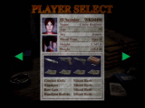
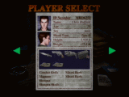
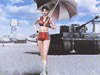
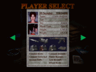
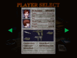
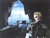
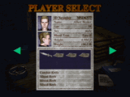
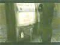

|
惡靈古堡～聖女密碼-----隱藏模式
|
|
在以任意模式破關一次後就會出現隱藏模式，角色共有五種不同的選擇，分別有不同的條件，達成後 即可使用該人物。雖然不是正式遊戲，卻依然有等級的評比Ｓ、Ａ、Ｂ、Ｃ、Ｄ五級，單純的以遊戲 時間計算。 遊戲中可以切換成第一視點，就像生存者的視點，感受不同的體驗。遊戲任務是擊倒所有敵人，再依 時間長短評定成績。 |
角色選擇
|
Claire Redfield |
 |
道具：野戰刀、M39R手槍、火藥弓箭、手槍子彈、 綜合藥草X4 頭目：Alexander |
|
Chris Redfield |
 |
道具：野戰刀、357麥林手槍、12SS散彈槍、散彈、 綜合藥草X2 頭目：Alexia |
 Claire Redfield |
 |
道具：野戰刀、M37榴彈發射器、硫彈、火炎彈、硫 酸彈、Ak47狙擊步槍、綜合藥草 頭目：Tyrant |
|
Steve Burnside |
 |
道具：野戰刀、Gold Lugar雙槍、Ingram M-10、綜合 藥草X2 頭目：砂蟲 |
|
 Albert Wesker |
 |
道具：野戰刀、綜合藥草X3 頭目：Alexia |
等級評比
| Claire | Chris | Claire2 | Steve | Wesker | |
| Ｓ | 6分10秒以前 | 6分30秒以前 | 8分00秒以前 | 10分00秒以前 | 1小時前 |
| Ａ | 6:10:00～6:19:99 | 6:30:00～8:29:99 | 8:00:00～8:59:99 | 10:00:00～12:29:99 | |
| Ｂ | 6:20:00～6:29:99 | 8:30:00～9:29:99 | 9:00:00～9:59:99 | 12:30:00～13:29:99 | |
| Ｃ | 6:30:00～ 6:39:99 | 9:30:00～10:29:99 | 10:00:00～10:59:99 | 13:30:00～14:29:99 | |
| Ｄ | 6分40秒以後 | 10分30秒以後 | 11分00秒以後 | 14分30秒以後 | 1小時後 |
|
Ｓ級的獎勵 如果能將Battle game的五位角色全以Ｓ級通過，可以得到特殊獎勵一隻Linear Launcher（能源砲），不過 這隻武器只能拿來玩玩，不能在正式遊戲中使用，在Battle game中使用的等級將不列入考量。而在正式 遊戲中選擇Normal模式以S級破關則可取得Rocket Launcher，也就是火箭砲囉。 隱藏的道具 遊戲中有一間類似賭場的房間，其中有一台吃角子老虎的遊戲機，調查看看，可以得到道具。其中的 file是在遊戲中無法得到的機密資料「D.I.J.的日記」。 |

| Claire | Chris | Claire2 | Steve | Wesker | |
| 可得道具１ | 衝鋒槍100% | M-100P雙槍100% | B.O.W毒氣彈X３ | M-100P雙槍100% | 麥林手槍＋子彈6發 |
| 可得道具２ | 急救噴霧 | 急救噴霧 | 急救噴霧 | 急救噴霧 | 急救噴霧 |
| 可得道具３ | File | File | File | File | File |
|
正式遊戲的等級評價 正式遊戲中的等級依照遊戲時間、事件、地圖探索、急救噴霧使用、色帶使用、接關來評判。 時間：
事件：
地圖探索： 達成100%探索得分100，其餘皆不給分。 急救噴霧： 沒有使用得分1800，其餘皆不給分。 紀錄： 第一次紀錄扣分1000，由第二次開始，每紀錄一次扣分50。 接關： 第一次接關扣分1000，由第二次開始，每接關一次扣分50。
|
|
PS2控制器無法作用的問題 惡靈古堡在 PS2 在推出的「聖女密碼完全版」對某些玩家可能出現了小問題，啟動遊戲時發生控制器 無法作用，出現「請按開始鈕進行遊戲」的字樣，按下開始鈕仍然無法進行遊戲。 經過 Capcom 公司的公開聲明，聖女密碼必須使用「新型震動搖桿2(DUALSHOCK 2 (SCPH-10010))」， 也就是 PS2 的專用手把，若使用 PSone 的手把則會無法進行遊戲。 |
惡靈深淵Biohazard Abyss http://98.to/coolbio